El realismo literario es una corriente estética que supuso una ruptura con el romanticismo,
tanto en los aspectos ideológicos como en los formales, durante la segunda mitad del siglo XIX.
Se extendió también a las artes plásticas en Latinoamérica, lugar donde hasta entonces no
había gran proliferación en este arte. Este se caracterizaba por una extensa y muy detallada
información de los personajes, paisajes, escenas, etc. De esta forma, podían ser
imaginados con mayor facilidad.
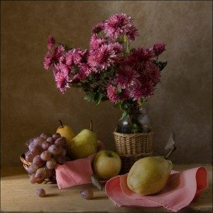
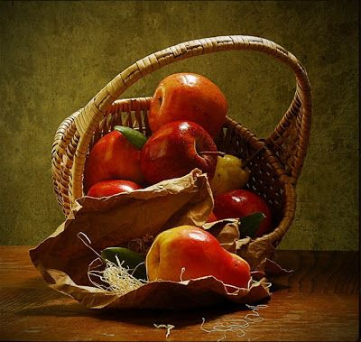
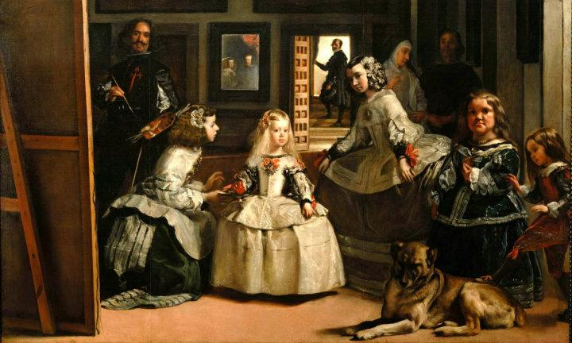
El hiperrealismo es un género de pintura y escultura que se asemeja a la fotografía.
El hiperrealismo es considerado un avance del fotorrealismo por los métodos utilizados.
El término se aplica a un movimiento y estilo de arte independiente que surge en Estados Unidos
y Europa a finales de 1960 y a principios de 1970.
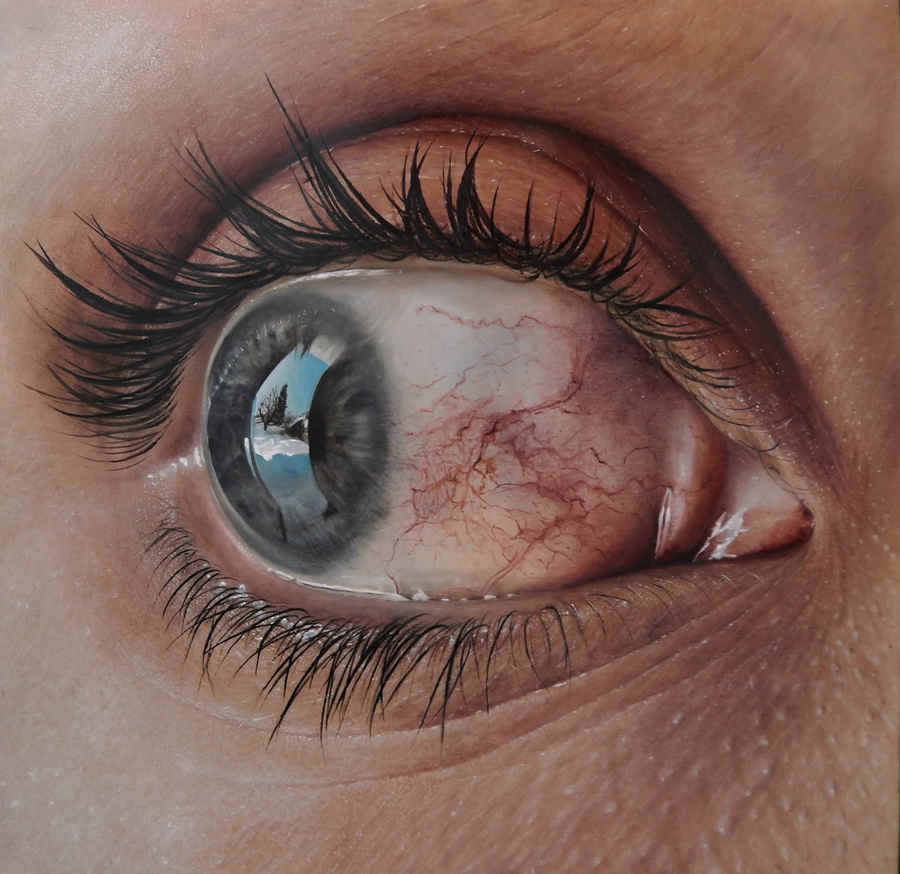
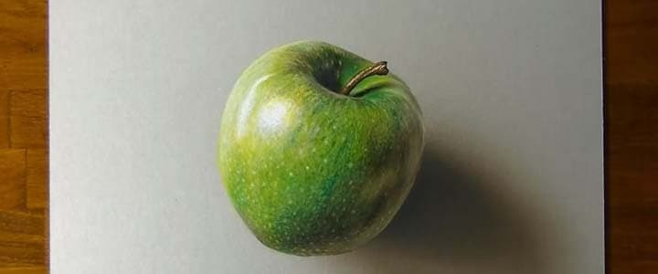
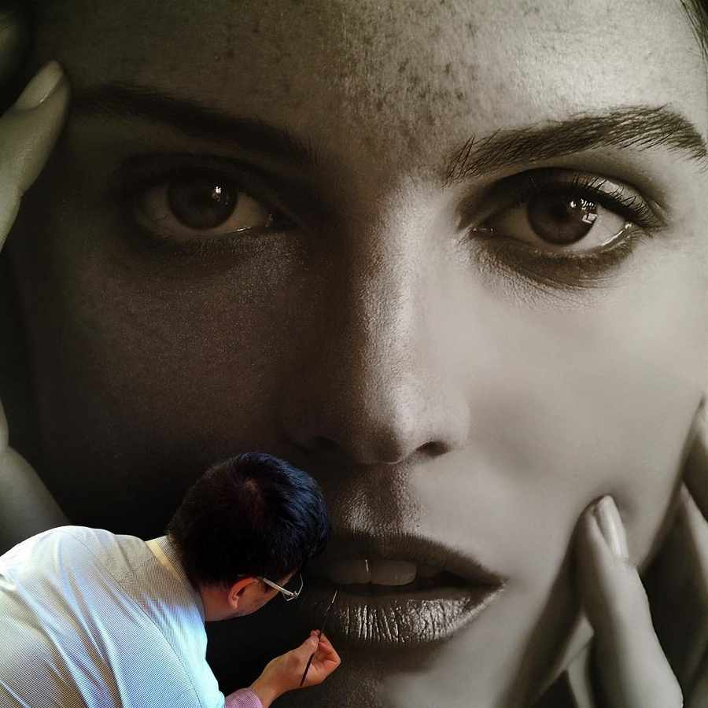
El surrealismo1 (del francés surréalisme) fue un movimiento cultural desarrollado en Europa tras
la Primera Guerra Mundial, influenciado en gran medida por el dadaísmo. La RAE lo describe como
"movimiento artístico y literario que intenta sobrepasar lo real impulsando lo irracional y onírico
mediante la expresión automática del pensamiento o del subconsciente".
El movimiento es conocido por sus artes visuales y su escritura mezclado a una imaginación inusual.
Los artistas pintaban imágenes desconcertantes e ilógicas, a menudo con una precisión fotográfica,
creando extrañas criaturas de objetos cotidianos y desarrollando técnicas pictóricas que permitían
desvelar el subconsciente. El objetivo era, según André Breton, "convertir las contradicciones de
los sueños y la realidad en una realidad absoluta, una súper realidad".
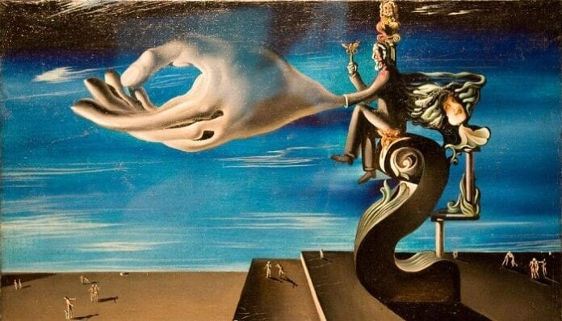
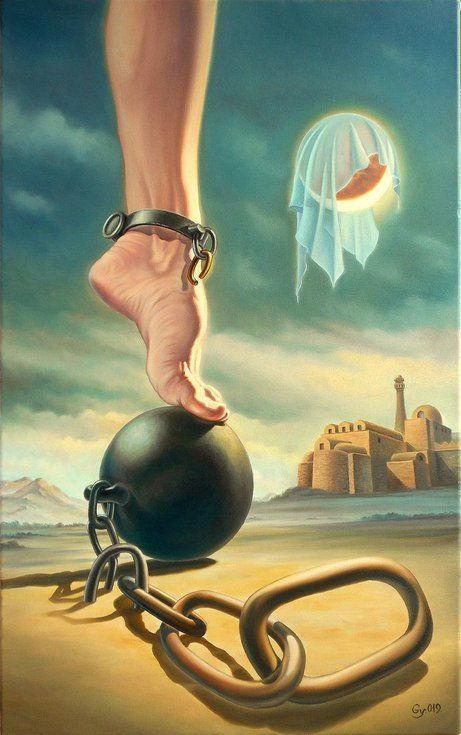
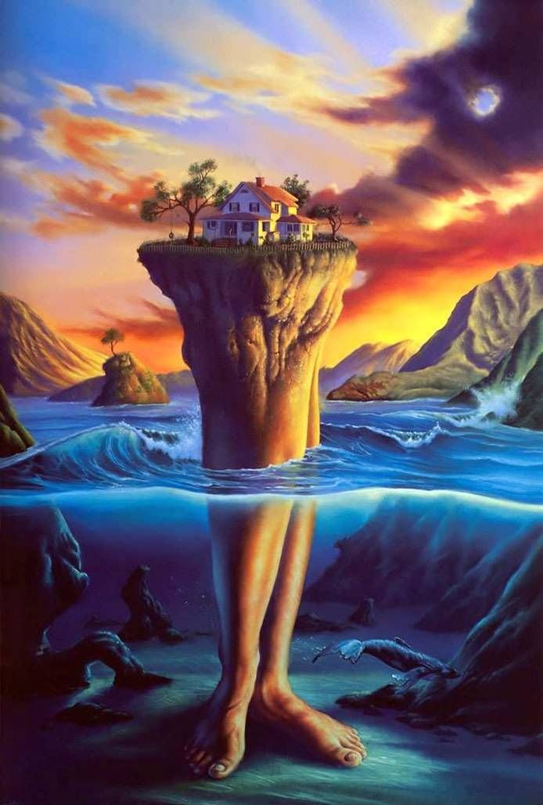
El impresionismo es un movimiento artístico inicialmente definido para la pintura impresionista,
a partir del comentario despectivo de un crítico de arte (Louis Leroy) ante el cuadro Impresión,
sol naciente de Claude Monet, generalizado a otros expuestos en el salón de artistas independientes
de París entre el 15 de abril y el 15 de mayo de 1874 (un grupo en el que estaban Camille Pissarro,
Edgar Degas, Pierre-Auguste Renoir, Paul Cézanne, Alfred Sisley, Berthe Morisot).
Aunque el adjetivo «impresionista» se ha aplicado para etiquetar productos de otras artes,
como la música (impresionismo musical —Claude Debussy—) y la literatura (literatura del
Impresionismo; hermanos Goncourt), sus particulares rasgos definitorios (luz, color, pincelada,
plenairismo) lo hacen de muy difícil extensión, incluso para otras artes plásticas como la
escultura (Auguste Rodin)4 y la arquitectura; de tal modo que suele decirse que el impresionismo
en sentido estricto solo puede darse en pintura y quizá en fotografía (pictorialismo) y cine
(cine impresionista francés o première avant-garde: Abel Gance, Jean Renoir; hijo del pintor
impresionista Auguste Renoir).
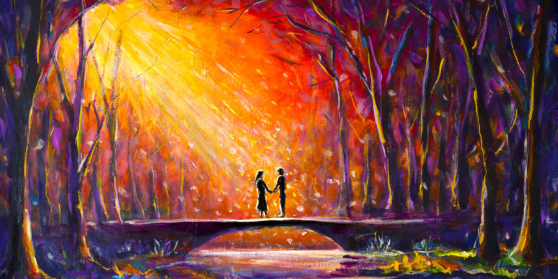


El arte abstracto es una forma de expresión artística que prescinde de toda figuración y
propone una nueva realidad distinta a la natural.1 Usa un lenguaje visual de forma, color y
línea para crear una composición que puede existir con independencia de referencias visuales
del mundo real.2 Abarca movimientos como el expresionismo abstracto, el suprematismo,3 el action
painting, De Stijl o el constructivismo.4
 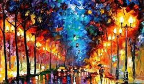
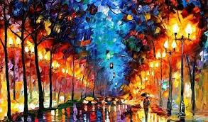

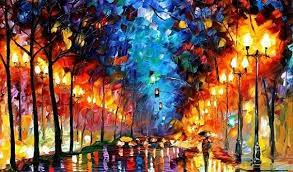